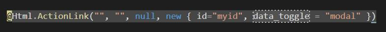

一、EditorFor
1、htmlAttributes 屬性的套用
於View頁面中會使用到一個EditorFor的方法如下
<div class="form-group">
@Html.LabelFor(model => model.type, htmlAttributes: new { @class = "control-label col-md-2" })
<div class="col-md-10">
@Html.EditorFor(model => model.type, new { htmlAttributes = new { @class = "form-control" } })
@Html.ValidationMessageFor(model => model.type, "", new { @class = "text-danger" })
</div>
</div>
但我想要有預設值該如何做?
我們可知其定義為
public static MvcHtmlString EditorFor<TModel, TValue>(this HtmlHelper<TModel> html, Expression<Func<TModel, TValue>> expression, object additionalViewData);
當我想要在元素的屬性上指定id屬性並給預設值時 ，則改為
<div class="form-group">
@Html.LabelFor(model => model.type, htmlAttributes: new { @class = "control-label col-md-2" })
<div class="col-md-10">
@Html.EditorFor(model => model.type, new { htmlAttributes = new { @class = "form-control", id = "myid" } })
@Html.ValidationMessageFor(model => model.type, "", new { @class = "text-danger" })
</div>
</div>
於網頁上將會顯示
{kind=link}
如果想再附加其他屬性則以此類推。
2、指定 value 預設值
如在 @Html.EditorFor 中，當我想要在元素的屬性上指定value預設值時 ，
如果照上面的設定卻無法成功，
因為value的值是經由model繫結所設定的，
所以應由Controller傳入預設定值
// GET: ACTICLEs/Create
public ActionResult Create()
{
var a = new ACTICLE();
a.type = "type";
return View(a);
}
網頁上的欄位就會顯示預設值了

二、ActionLink
1、html attribute 屬性
須注意如果View使用到ActionLink時，
則不能學上一個例子變成
@Html.ActionLink(item.title, "NewsList", "NewsLists", new { item.Id }, new { htmlAttributes = new { @class = "form-control" } })
這是錯的，要使用
@Html.ActionLink(item.title, "NewsList", "NewsLists", new { item.Id }, new { @class = "link2" })
才對。總而言之，大部分helper的htmlattributes的給法跟ActionLink是一樣的，
只有EditorFor比較特別一點。
2、dash attribute 屬性
例如想要在 @Html.ActionLink() 添加帶有 dash 屬性時，
@Html.ActionLink("", "", null, new { id="myid", data-toggle = "modal" })
則會產生語法錯誤

這時請將 dash 改用底線來表示即可

參考資料：